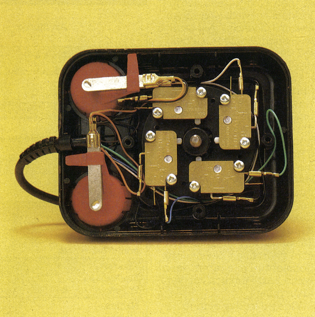
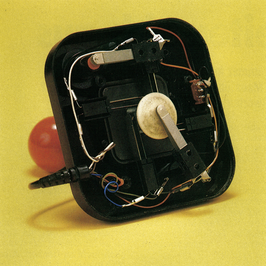

Mehr als ein »Spielzeug«
Joysticks und Spiele sind zwei untrennbare Begriffe, doch Joysticks können mehr. Wir zeigen Ihnen sinnvolle Alternativen und ernsthafte Anwendungen.
Vor allem für die Spielefreaks ist der Joystick ein unentbehrliches Arbeitsmittel geworden. Welcher begeisterte Computerspieler könnte sich heute ein Leben ohne Joystick vorstellen? Dagegen fragten sich die Liebhaber ernsthafter Anwendungen, ob sie den »Knüppel« nicht auch sinnvoll einsetzen könnten. Eine Einsatzmöglichkeit zeigen wir Ihnen hier auf.
Funktionsprinzipien
Vom Computer aus gesehen besitzt jeder Joystick fünf verschiedene Schaltkontakte (vier Richtungen und der Feuerknopf) (Bild 1). Im Ruhezustand verhalten sich diese Schalter so, als wären sie nicht vorhanden. Die Eingangsleitung führt Hi-Potential, das sie über einen Widerstand gegen die Versorgungsspannung erhält. Beim Bewegen des Joysticks wird einer der Schalter gegen Masse kurzgeschlossen. Der C 64 reagiert an seinem Eingang (CIA 1) entsprechend seiner Programmierung darauf. Eine bestimmte Speicherstelle wird auf einen definierten Zustand gesetzt, der vom Programmierer in eigenen Routinen abfragbar ist. Damit wäre das Prinzip des Joysticks bereits erläutert. Im Laufe der Zeit wurden verschiedene Techniken entwickelt, um den oben beschriebenen Effekt zu erzielen. Am besten bewährt haben sich bisher Mikroschalter (Bild 1) und Metallzungenkontakte (Bild 2). Joysticks mit solchem Innenleben erwiesen sich als sehr robust und langlebig.


Daneben sind noch andere Joysticks, die nach anderen Techniken aufgebaut sind, auf dem Markt erschienen. Diese Alternativen werden im folgenden kurz beschrieben. Einige Joysticks, die bereits seit etwa einem Jahr auf dem Markt sind, fallen durch stabile Kugelschalter im Inneren auf. In der Verlängerung des Griffstücks befindet sich eine massive Stahlkugel, die beim Bewegen des Hebels gegen eine der vier eingebauten Metallwände gedrückt wird. Dadurch wird der entsprechende Kurzschluß ausgelöst.
Eine völlig andere Technik verwenden die mit Quecksilberschaltern ausgestatteten Joysticks. In deren Inneren befinden sich vier nicht ganz waagerecht angeordnete Röhrchen. Sie enthalten jeweils zwei Kontakte, die beim Bewegen des Joysticks durch einen Quecksilbertropfen verbunden werden.
Eine weitere Variante verwendet für die Übertragung der nötigen Signale Infrarotlicht. Dabei wird kein Kabel mehr verwendet. Allerdings konnte sich diese Technik bisher nicht durchsetzen, da sie eine hohe Gegenlichtempfindlichkeit aufweist. Unsicherheiten bei der Bedienung fallen ebenfalls negativ auf (aus größerer Entfernung muß man das Empfangsgerät zielsicher anpeilen).
Die meisten Joysticks sind heute mit dem komfortablen Dauerfeuer ausgestattet. Vor allem bei schnellen Schießspielen erweist sich dies als großer Vorteil. Das schnelle Drücken und Loslassen des Feuerknopfes übernimmt hier eine kleine elektronische Schaltung. Manche Joysticks bieten sogar die Möglichkeit, die Geschwindigkeit des Dauerfeuers zu regeln oder den Feuerknopf einfach zu verriegeln.
Die Alternative — Trackballs
Von der Maus einmal abgesehen, bildet der Trackball eine echte Alternative zum Joystick. Beim Trackball handelt es sich um eine in einem Gehäuse untergebrachte Kugel, die durch Drehbewegungen Signale für den Computer erzeugt. Im Prinzip ist der Trackball nichts anderes als eine auf den Kopf gestellte Maus. Vom System her existieren zwei Arten von Trackballs. Die einen simulieren einen Joystick, während die zweite Spezies eine Maus vortäuscht. Vom programmtechnischen Gesichtspunkt aus bedeutet dies, daß bei ersterem nur die neun auch beim Joystick vorhandenen Zustände eintreten können (vor, zurück, links, rechts, vier Diagonalbewegungen und Feuerknopf). Die zweite Art von Trackballs verhält sich hier um einiges variabler. Sie arbeiten nach dem Prinzip der X/Y-Achse. Dabei wird für jede mögliche Kugelstellung ein eigenes Signal gesendet. Die Abfrage richtet sich in diesem Fall nicht nach den neun möglichen Stellungen, wie beim Joystick, sondern nach den entsprechenden Koordinaten, die sich ergeben würden, wenn man über den Ball ein Koordinatensystem (X/Y-Achse) legen würde. Für jede mögliche Ballposition wird ein eigenes Signal erzeugt. Damit ergeben sich für die Abfrage und Auswertung des Signals entsprechend mehr Möglichkeiten als beim normalen Joystick. Während beim Joystick zum Beispiel bei einem Grafikprogramm nur 45 Grad-Linien gezogen werden können, ermöglicht eine derart variabel gehaltene Trackball-Technik beliebige Verwinkelungen. Einen Haken hat die ganze Sache allerdings. Eine praktische Anwendung dieser genauer arbeitenden Trackballs liegt sehr weit vom C 64 entfernt. Sie werden beispielsweise in Radarstationen eingesetzt, denen die normalen neun Signale nie ausreichen würden. Für den C 64 wäre eine derartige Implementation schon sehr ungewöhnlich. Natürlich gibt es auch für den C 64 entsprechende Trackballs zu kaufen. Näheres dazu erfahren Sie in der Marktübersicht Eingabegeräte dieser Ausgabe.
Menüsteuerung per Joystick
Nur sehr wenige Programmierer haben sich überlegt, wie und ob man den Joystick auch für ernsthafte Anwendungen einsetzen kann. Was spricht gegen eine, wie aus vielen Spielen, Grafikprogrammen und Betriebssystemen bekannten, Menüsteuerung eigener Programme mit dem Joystick? Anwenderprogramme auf größeren Computern, wie zum Beispiel dem Amiga, führen den Benutzer mit Hilfe der Maus durch die komplexen Anwendungen. Daß dies auch auf dem C 64 möglich ist, beweist Geos, das neue Betriebssystem mit grafischer Benutzeroberfläche. Mit dem Joystick kann also ein ähnlicher Komfort auch auf dem C 64 erreicht werden, wenn Ihnen die Anschaffung einer Maus nicht lohnend erscheint. Funktionsfähige Programme unter Verwendung der Joysticksteuerung lassen sich sogar in Basic schreiben. Mit Hilfe einer kurzen Basic-Routine läßt sich der Joystick-Port ohne Probleme abfragen (Listing).
10 PO=56320:BILD=1024:FARBE=54272 20 ME=PEEK(BILD):POKE BILD,160:POKE BILD+FARBE,PEEK(646) 30 JS=PEEK(PO):BEWEG=0 40 IF (JS AND 1)=0 THEN BEWEG=BEWEG-40 50 IF (JS AND 2)=0 THEN BEWEG=BEWEG+40 60 IF (JS AND 4)=0 THEN BEWEG=BEWEG-1 70 IF (JS AND 8)=0 THEN BEWEG=BEWEG+1 80 IF (JS AND 16)=0 THEN POKE BILD,ME:END 90 IF BILD+BEWEG<1024 OR BILD+BEWEG>2023 THEN BEWEG=0 100 POKE BILD,ME:BILD=BILD+BEWEG:GOTO 20
Mit diesem Programm wird der eingefärbte Cursor durch Joystickbewegungen über den Bildschirm gesteuert. Der Joystick muß dabei an Control-Port 2 angeschlossen sein. Doch nun zur Erklärung obigen Programms.
Die Adresse, in der die vom Joystick ankommenden Signale zur Auswertung abgelegt werden, ist für Control-Port eins 56321, für den im Programm verwendeten Control-Port zwei 56320. Dieser Wert ist in der Variable »PO« gespeichert. Der Anfang des Bildschirmspeichers liegt bei Adresse 1024 und findet sich in der Variable »BILD« wieder. Die Endadresse des Bildschirms ist 2023. Zum aktuellen Bildschirmpunkt muß dann noch die aktuelle Farbe (Zeile 20) in der zugehörigen Farbspeicherstelle gesetzt werden (Bildpunkt plus 54272). Nach dem Starten des Programms mit RUN steht der Cursor in der linken oberen Bildschirmecke (Anfang Videospeicher). Falls dort bereits ein Zeichen steht, darf dieses natürlich nicht überschrieben werden. Daher merken wir uns dieses in »ME« (Zeile 20). Danach wird unser zu steuerndes Zeichen, das den ASCII-Wert 160 hat, an diese Stelle gesetzt. Die aktuelle Farbe stellt das Betriebssystem auf Speicherplatz 646 zur Verfügung. In Zeile 30 beginnt erst die eigentliche Joystick-Abfrage. Dazu muß als erstes das Informationsregister ausgelesen werden. Der Wert wird nach »JS« gebracht. »BEWEG« verkörpert die Summe der Bewegungen, die vor der Auswertung von »JS« auf Null gesetzt werden muß. Von dem übergebenen Byte sind für uns nur die ersten fünf Bits von Interesse. Diese werden über die logische Verknüpfung »AND« ausgefiltert. Ein vom Joystick aktiviertes Bit erhält den Wert Null, dem Ruhezustand entspricht die logische Eins. Um auf dem Bildschirm eine Bewegung nach oben darzustellen, subtrahiert man von der Position des Zeichens den Wert 40. Eine Zeile nach oben entspricht dem ersten Bit der Variablen »JS«. Realisiert wird dieser Schritt in Zeile 40. Eine Bewegung nach unten entspricht dem zweiten Bit (Zeile 50), dasselbe nach links betrifft das dritte Bit und entspricht auf dem Bildschirm der Subtraktion von Eins (Zeile 60). In Zeile 70 wird schließlich noch die Bewegung nach rechts abgefangen. Die möglichen Diagonalbewegungen sind auf diese Weise ebenfalls erfaßt, auch wenn es auf den ersten Blick nicht auffällt. Die Bewegung nach links unten ergibt nach dem Durchlauf der »IF«-Abfragen den Wert »+39«. Die letzte Abfrage in Zeile 80 gilt dem Feuerknopf. Wird dieser gedrückt, soll das Zeichen in der linken Ecke wiederhergestellt und das Programm beendet werden. In Zeile 90 wird lediglich überprüft, ob sich das Zeichen weiterhin im Rahmen des Bildschirmspeichers bewegt. Danach bringt Zeile 100 das überschriebene Zeichen wieder auf den Bildschirm, aktualisiert die Bildschirmposition und springt wieder nach Zeile 20. Damit hätten wir unsere kleine Demonstration zum »Basic-Einsatz« des Joysticks beendet.
Beim Kauf zu beachten...
Doch für welches Modell soll man sich beim Kauf entscheiden, welche Kriterien sind zu beachten?
Einer der wichtigsten Auswahlpunkte ist die Griffigkeit. Der Hebel sollte gut in der Hand liegen und vom Anwender leicht zu führen sein. Ein weiterer Punkt ist der Weg, den der Hebel zurücklegen muß, bis der Kontakt geschlossen ist. Sehr zu empfehlen ist ein stabiles Gehäuse, Sie werden es bei längeren Extrembelastungen bald zu schätzen wissen. Wollen Sie Ihren Joystick stationär einsetzen, sollte das Gerät über gut haftende Saugnäpfe verfügen. Eine weitere Rolle spielt natürlich der Preis. Komfort muß auch hier bezahlt werden. Besser man greift anfangs etwas tiefer in die Tasche, als sich alle vier Wochen einen neuen Billig-Joystick zu kaufen. Um den für Sie optimalen Joystick zu finden, sollte Ihnen Ihr Händler nicht verwehren, das Gerät an einem Programm Ihrer Wahl auszutesten. Erst dann können Sie eine klare Entscheidung gegen oder zugunsten eines bestimmten Produkts treffen. Die Vielfalt des Angebots läßt hoffen, daß für jeden etwas dabei ist.
Nun sind Sie über alle wichtigen Kriterien, die bei Joysticks und Trackballs im allgemeinen zu Beachten sind informiert. Genauere Angaben über Preise, verwendete Techniken und besondere Eigenschaften können Sie wieder der Marktübersicht Eingabegeräte entnehmen. Für wen die Maus als echte Alternative interessant ist, der kann sich die nötigen Informationen zu diesen Kleintieren der Computerwelt aus dem ebenfalls in dieser Ausgabe abgedruckten Artikel über Mäuse holen.
(rf)